Akaiwa, Okayama: things to do, food and stays
Akaiwa · Okayama
Akaiwa
Highlighted on the Okayama map.

Stay
Casa 狐穴 KitsuneAna 和モダンな100年古民家で里山を体験する

Casa Kitsuneana KitsuneAna Wa Modan Na 100 Nen Ko Minka De Satoyama Wo Taiken Suru
Inn in Totsuno, Akaiwa with a renovated traditional house and a quiet countryside setting.
Dining
すし処 ひさ田

Sushi Tokoro Hisa Ta
そば切り 來輪
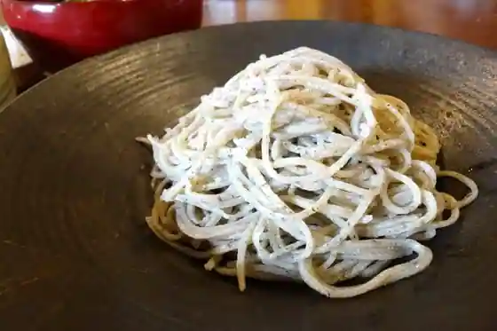
Soha Kiri Rai Wa
ワンタン チンタン アンポンタン
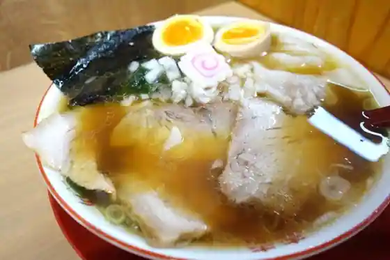
Wantan Chintan Anpontan
ら～めん道場
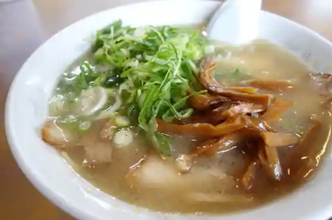
Ra ~ Men Dojo
FRUIT HOUSE 本店
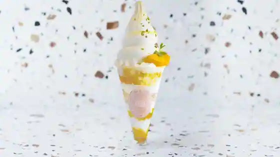
FRUIT HOUSE Hon
極麺 狐晴
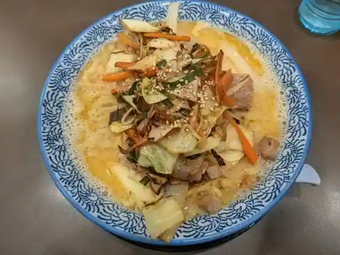
Kyoku Men Kitsune Sei
麦のひげ 赤磐店
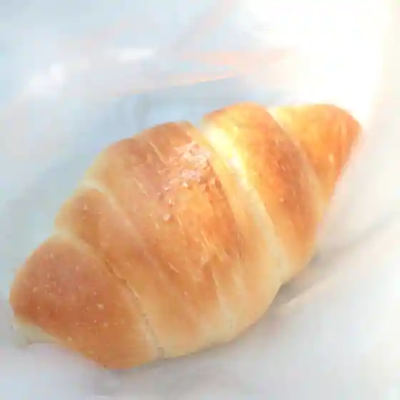
Mugi Nohige Akaiwa
こだわりとんかつ カツ陣 山陽店
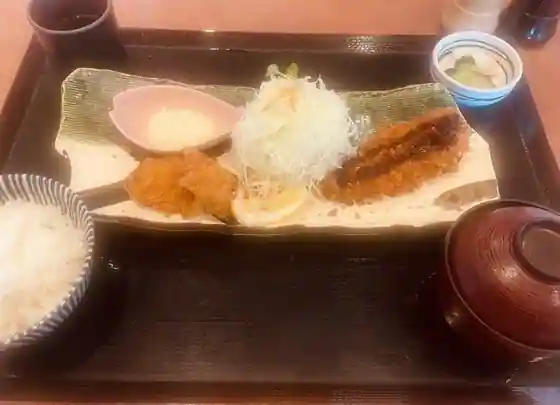
Kodawaritonkatsu Katsu Jin Sanyo
らぁめん 緑屋
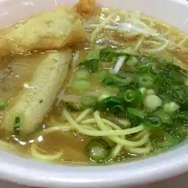
Ramen Midoriya
イーフラット
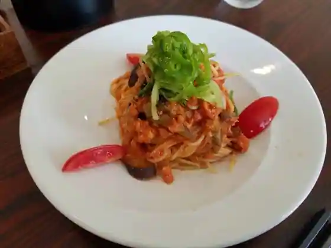
Ifuratto
アッカ
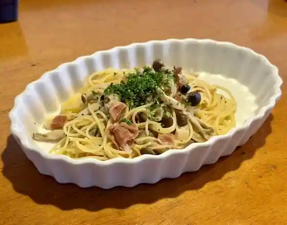
Akka
きんばね
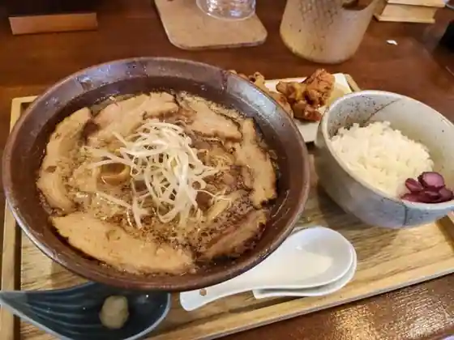
Kinbane
CAFE DU GRACE
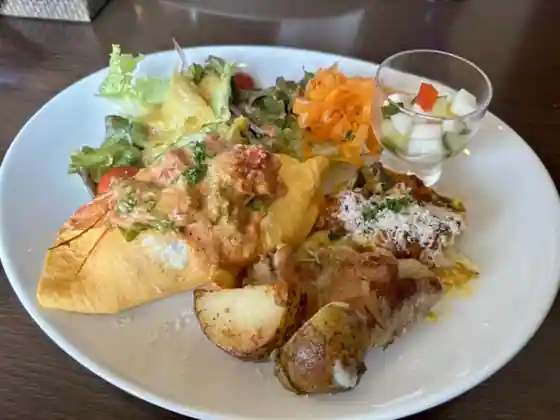
CAFE DU GRACE
めん市場
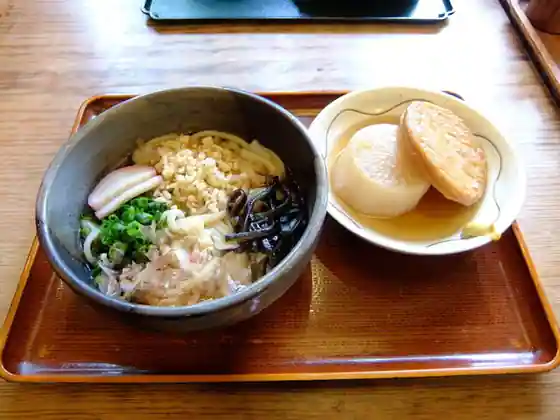
Men Shijo
オムライスの店 山陽店
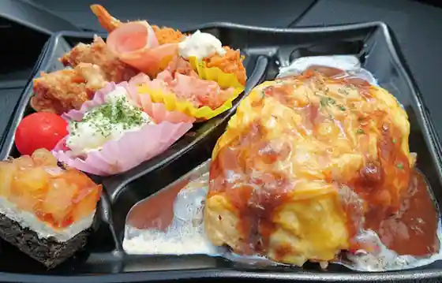
Omuraisu No Sanyo
茶臼
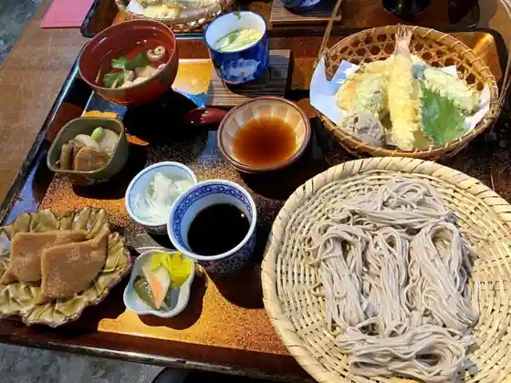
Chausu
仙助
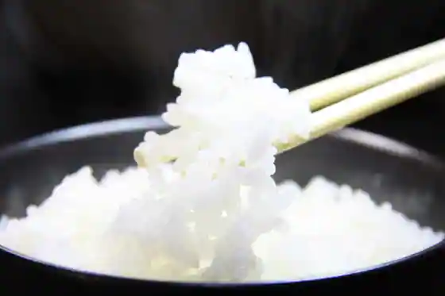
Sen Jo
御善房たか本
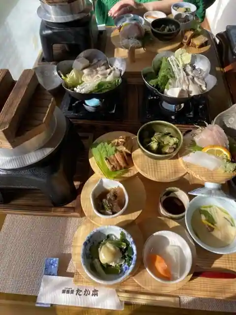
O Zen Bo Taka Hon
つざきの郷
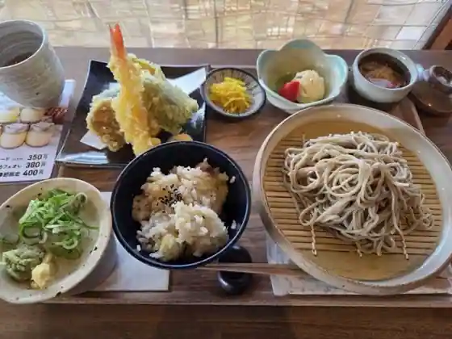
Tsuzakino Sato
味心逆瀬川
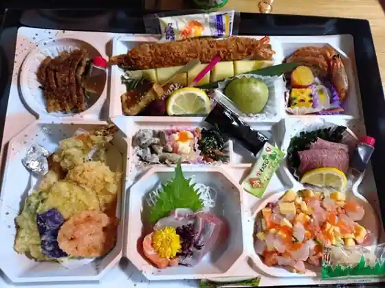
Aji Kokoro Gyakusegawa
アウル
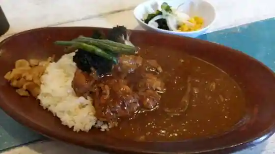
Auru
根本商店 赤磐店
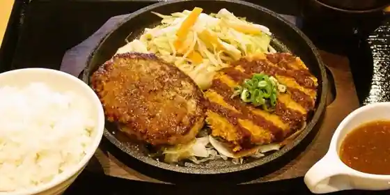
Konpon Sho Akaiwa
若大将
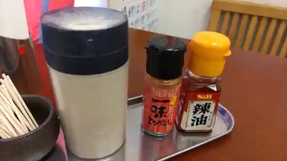
Wakadaisho
サンデー
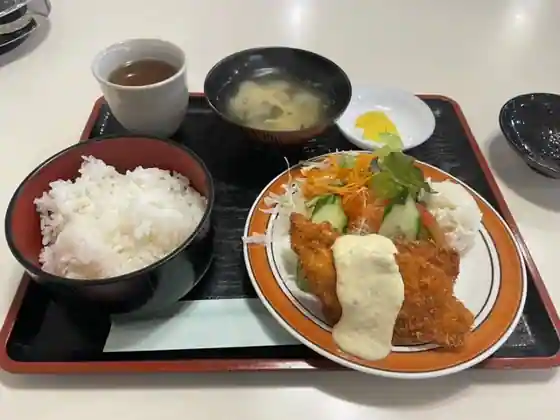
Sande
Sights
Okayama Foresuto Park Doitsu Forest

Sanyo Aozora City Momo no Sato Mise
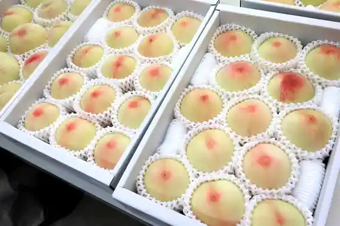
Kumayama Eikoku Garden
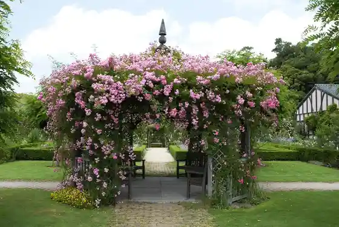
Momo Shigezane En
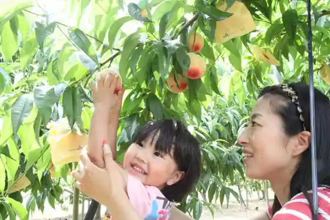
Ishigami Futsu Tamashii Shrine
Fujiwara Engei
Ashi O Shrine
no Maru Engei Akaiwa Farm
Yoshii Farm
Sanyo Fureai Park
Yoshii Ryuten Oto Campground
Iwakami Shrine
Kin Sei Daimyojin (Akaiwa)
Kumayama Iseki
Shitsu Town Shuzo
Chi Sen Falls
Koresato Wainarii
Akaiwa Shuzo
Yoshii Shiroyama Park
Akaiwa Ryuten Tenmondai Park
Akaiwa no Momobatake (Kamo Mae Nishinaka Chiku)
Furutsuhausu
Futsu Birin Kan Gakko
Akaiwa Sanyo Local History Museum
Ryogu Yama Burial Mound
Machizukuri Yume Hyaku Warai
Ishi Hasu Tera Minna Forest
O Warai Akasaka Tei
Munakata Shrine
Akasaka Kantorii Club
Nagase Kiyoko Tenjishitsu
Akaiwa Yoshii Local History Museum
Bizen Kokubunji Ato